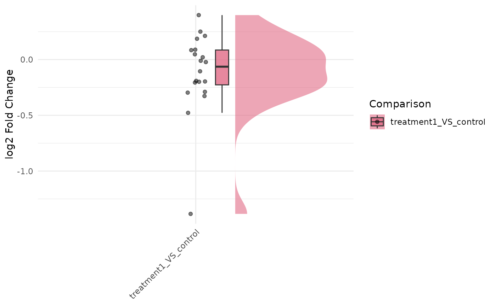

Raincloud plot of fold-change distributions across comparisons
Source:R/bioccheck_roxygen_fixes.R, R/viz_related.R
get_foldchange_raincloud.RdUses ggrain::geom_rain() to display log2 fold-change distributions for
selected comparisons, with optional statistical testing across comparisons.
Usage
get_foldchange_raincloud(
x,
genes = NULL,
sample_comparisons = NULL,
facet_scales = "free_x",
facet_nrow = NULL,
facet_ncol = NULL,
facet_by = c("auto", "comparison", "none"),
rain_side = c("r", "l", "f", "f1x1", "f2x2"),
id.long.var = NULL,
alpha = 0.5,
point_size = 1.5,
p.label = "p.signif",
stats_group = FALSE,
stats_method = "t.test",
label = FALSE,
label_column = "gene_id",
label_size = 3,
label_max_overlaps = 50,
display_id = NULL,
display_from = NULL,
display_orgdb = NULL
)Arguments
- x
A
VISTAobject containing differential expression results.- genes
Optional character vector of gene IDs to include.
- sample_comparisons
Optional character vector of comparison names to plot.
- facet_scales
Facet scales argument passed to
facet_wrap()whenfacet_by != "none"(default"free_x").- facet_nrow, facet_ncol
Optional layout passed to
facet_wrap()when faceting.- facet_by
Faceting mode:
"auto"(default),"comparison", or"none".- rain_side
Side specification passed to
ggrain::geom_rain(); one of"r","l","f","f1x1", or"f2x2".- id.long.var
Optional column name passed to
ggrain::geom_rain()asid.long.varto identify repeated measurements.- alpha
Alpha for jittered points.
- point_size
Point size for jittered points.
- p.label
Label type passed to
ggpubr::stat_compare_means().- stats_group
Logical; add pairwise statistical tests when
TRUE.- stats_method
Statistical method passed to
ggpubr::stat_compare_means().- label
Logical; add text labels to points using
ggrepel.- label_column
Column name in the plotting data used for labels. Defaults to
"gene_id"for fold-change raincloud plots.- label_size
Text size for point labels.
- label_max_overlaps
Maximum overlaps passed to
ggrepel::geom_text_repel().- display_id
Optional ID/column name to use for labels. If supplied and present in
rowData(x), those values are used; otherwise falls back to ID mapping.- display_from
Optional source ID type for mapping (used when
display_idis not found inrowData).- display_orgdb
Optional
OrgDbobject used for ID mapping whendisplay_idis set but not found inrowData.
Details
id.long.var controls which repeated unit is connected by lines in
ggrain::geom_rain().
Recommended usage for fold-change raincloud plots:
id.long.var = NULL(default): best for clean distribution summaries.id.long.var = "gene_id": most useful option; connects each gene across comparisons.id.long.var = "comparison"is generally not useful because comparison is already on the x-axis.Continuous value columns (e.g.
log2FoldChange) are not suitable identifiers for line connections.Point labels (
label = TRUE) work best withfacet_by = "none"unless only a small set of genes is shown.
For identifier display consistency with other VISTA plotting functions, set
display_id (for example, "SYMBOL"). When provided, genes can be given
in that ID space, and default point labels use the mapped display IDs.
Examples
v <- example_vista()
comp <- names(comparisons(v))[1]
genes <- head(as.character(comparisons(v)[[comp]]$gene_id), 20)
p <- get_foldchange_raincloud(v, sample_comparison = comp, genes = genes)
print(p)
